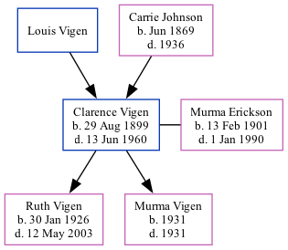

Clarence Dewey Vigen 1899 - 1960
[ Home ] | [ Surnames Index ] | [ Family History ]The twin brother of Harry Arthur and the 2nd of 3 children of Louis Vigen and Carrie Johnson, , Clarence was the great-grandfather of Stephanie Hardesty (née Teten), was born in Sioux City, Woodbury, Iowa, USA on Aug 29, 18991,2,3,4,5,6,7,8 along with his twin brother Harry Arthur and married Murma Erickson (with whom he had 2 children: Ruth Carol and Murma Jean) in Sioux City, IA on Jun 22, 1921.
During his life, he was living in Sioux City, Woodbury, Iowa in 19001; in Sioux Ward 3, Woodbury, Iowa in 19102; in Woodbury in 19157; in Sioux City Precinct 8, Woodbury, Iowa in 19203; in Mapleton, Monona, Iowa in 19304; in Sioux City in 19355; in Sioux City, Iowa, USA in 19389; in Nebraska City, Otoe, Nebraska, USA on Apr 1, 19405; and in Sioux City8.
He died on Jun 13, 1960 in Nebraska City.
Parents
- Louis Dewey
- Carrie was born in Jun 1869
Children
- Ruth Carol was born on Jan 30, 1926
- Murma Jean was born in 1931
Citations
- 1900 United States Federal Census Ancestry.com Operations Inc (Age: 9/12; Marital Status: Single; Relation to Head of House: Son)
- 1910 United States Federal Census Ancestry.com Operations Inc (Age in 1910: 10; Marital Status: Single; Relation to Head of House: Son)
- 1920 United States Federal Census Ancestry.com Operations Inc (Age: 20; Marital Status: Single; Relation to Head of House: Son)
- 1930 United States Federal Census Ancestry.com Operations Inc (Age: 30; Marital Status: Married; Relation to Head of House: Head)
- 1940 United States Federal Census Ancestry.com Operations, Inc. (Age: 40; Marital Status: Married; Relation to Head of House: Head)
- Iowa, Births and Christenings Index, 1857-1947 Ancestry.com Operations, Inc.
- Iowa, State Census Collection, 1836-1925 Ancestry.com Operations Inc (Marital Status: Single)
- U.S., World War I Draft Registration Cards, 1917-1918 Ancestry.com Operations Inc
- U.S. City Directories, 1821-1989 (Beta) Ancestry.com Operations, Inc.
Family Tree
Data (GEDCOM) maintained by Jay Weston Hannah, Omaha, Nebraska, USA.
Website generated by ged2site. Last updated on Jun 18, 2024.